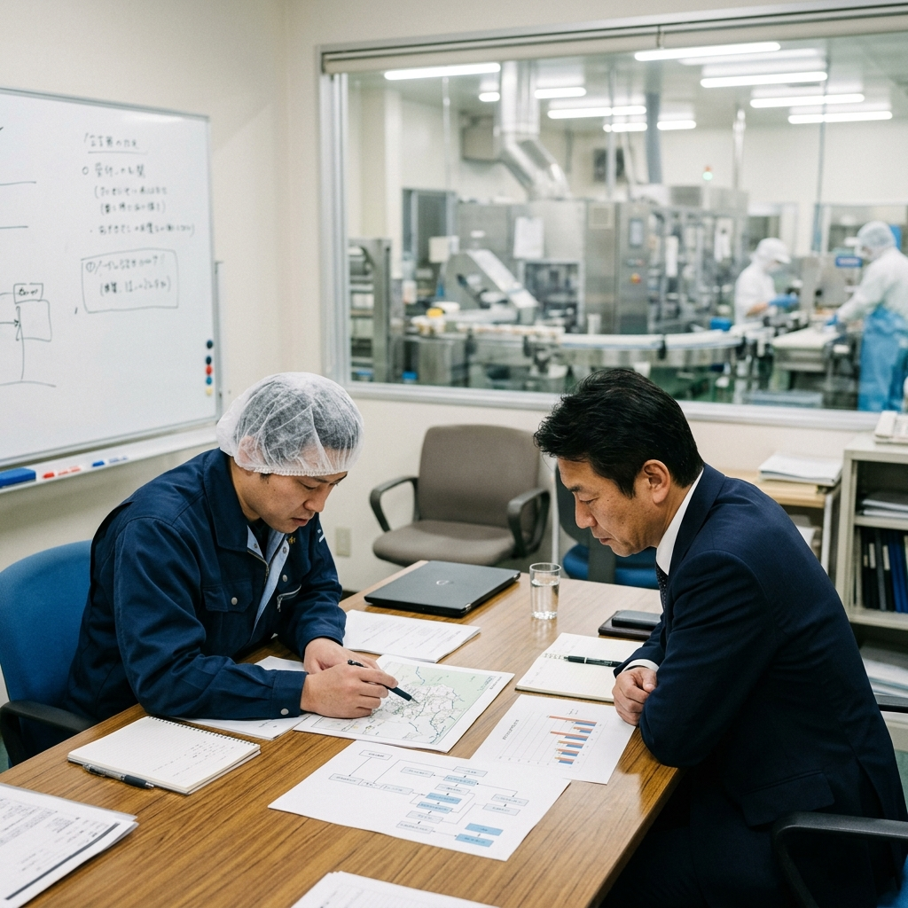

審査で効く「説明できるHACCP」。CCP/OPRP/PRPの整理と、検証・是正の最小セット

「日々の記録は全部取っていて、衛生管理もしっかりやっているはずなのに、いざISOやJFS-Bの審査員が来ると、なぜか不適合（指摘）を出されてしまう…」
審査の場面でよくあるこの悩み。実は、現場がサボっているから指摘されるのではありません。マニュアルの記載事項や日々の記録が、「なぜその基準で管理しているのか（根拠）」という一本の線で繋がっておらず、監査員に対して“説明できない状態”に陥っていることが原因です。
この記事では、監査（審査）のプロである監査員が「どこを見て、どう納得するのか」という視点をベースに、混同しやすいPRP/OPRP/CCPの整理術と、審査を圧倒的に有利に進める「検証の最小セット」を解説します。
1. 「説明できないHACCP」が起きる3つの理由
現場の担当者がHACCPの内容を監査員に「説明できない」状態は、知識不足ではなく、システム設計の段階で情報のつながりが切れていることを意味します。
- ハザード分析と管理手段が断絶している： コピーしてきた他社のハザード分析表を使っており、「なぜこの工程がCCP（重要管理点）になったのか？なぜPRP（一般的な衛生管理）じゃダメなのか？」という質問に答えられない。
- 基準と判断が曖昧： 設定した温度や時間が外れた時（逸脱時）に、「製品をどうするのか（捨てるのか、再加熱するのか）」がマニュアルに落とし込まれていない。
- 検証が“点”で存在している： チェック表に「レ点」はついているが、それが月や年単位で振り返られておらず、改善行動に結びついていない（PDCAの「C」と「A」がない）。
監査・審査で求められるのは、決して「分厚くて完璧な文書」ではありません。設定したルールに「一本の筋道（根拠のあるストーリー）」が通っており、それが現場で運用されていることです。
2. 監査員が見ている“整合の線”を通す
審査を通過する（＝監査員を納得させる）には、彼らが頭の中で描いている「上流から下流へのストーリー」に沿って文書を整理しておく必要があります。
上流（根拠の明確化）
原料の受け入れから出荷まで（工程把握）の中で、どこにどんなハザード（食中毒菌や異物）が潜んでいるかを洗い出し（ハザード分析）、「ここは重点的に管理しないと命に関わる」という評価（重要度評価）を行うプロセスです。
下流（現場での運用）
上流で「危ない」と分かった箇所に対し、どのような手段（PRP/OPRP/CCP）で防ぐのかを決め、合格ライン（基準）を現場に落とし込みます。そして「それを誰がどう監視するか」「外れたらどうするか」の手順を作り、結果を紙やデータ（記録）に残します。
確認（検証とフィードバック）
下流でつけた記録を持ち寄り、「本当に今のやり方で安全を守れているか？」を後からレビュー（内部監査や記録の傾向分析）し、ルール自体をアップデートする仕組みです。
3. 用語に惑わされない！PRP / OPRP / CCPの整理術
専門用語の定義論に引っ張られると、現場は迷走します。実務では「逸脱したときのリスクの大きさと、対応の強度」という基準で整理すると非常にシンプルになります。
| 分類 | 意味合いと管理の強度 | 逸脱時（異常時）の考え方 |
|---|---|---|
| PRP （前提条件プログラム） |
工場の「環境・土台」整備におけるルール。 例：手洗いの徹底、床の清掃、ネズミの防除。 |
逸脱しても即座に製品事故に繋がるわけではないため、「気づいた時点で清掃し直す（現場改善）」で対応可能。 |
| OPRP （オペレーションPRP） |
工程の中で「特に気を引き締める」ポイント。 例：異物混入を防ぐための目視検査やふるい掛け。 |
基準を外れたら「製品に影響がないか」を確認し、必要に応じて原因の調査と再発防止策を練る。 |
| CCP （重要管理点） |
「ここで失敗したら即・回収（命の危険）」となる最後の砦。 例：加熱殺菌の温度と時間、金属検出機。 |
基準を外れた製品は「即座に隔離し、出荷を止める」ことが絶対条件。厳密な判断基準と再発防止のシステム（是正処置）が必須。 |
4. 審査で致命傷を防ぐ「逸脱時のルール（是正）」
監査員がCCPやOPRPをチェックする際、最も厳しく突っ込んでくるのが「逸脱時の行動」です。単に「責任者に報告する」とマニュアルに書いているだけでは、不適合の対象になります。
現場で異常が起きた際は、以下の「3つのアクション」がセットで定まっている必要があります。
- ① 影響を受けた製品の止血（隔離）： 基準を外れたロット（例えば加熱温度が1℃足りなかった時間帯に流れた全製品）を即座に「保留品置き場」に移動・特定するルール。
- ② 評価と処置の決定： 保留された製品を「再加熱でいけるか」「廃棄か」「検査に回すか」を、誰が・どんな基準で判定するのかの明文化。
- ③ 工程（環境）の元の状態への復帰： なぜ温度が下がったのか（機械の故障か人為的ミスか）を突き止め、修理や再発防止教育を行ってからラインを再稼働させる手順。
「なぜこの工程にこの基準を設けたのか（根拠）」「外れたらどうやって製品への影響をブロックするのか（是正）」「決めたルールが正しく動いているかどう確かめるのか（検証）」。この3点をスムーズに言葉にできる状態こそが、「説明できるHACCP」の完成形です。監査対応の不安を無くすためにも、まずは自社の文書の「整合性」を見直してみてください。
審査員を納得させる『整合性の取れた土台』を構築する
「CCPの根拠づけに自信がない」「是正処置の書き方が分からない」とお悩みの企業様へ。
プロの監査員目線で「整合の線」があらかじめ設計された、エラーを防ぐHACCP構築Excelテンプレートを無料で配布しています。